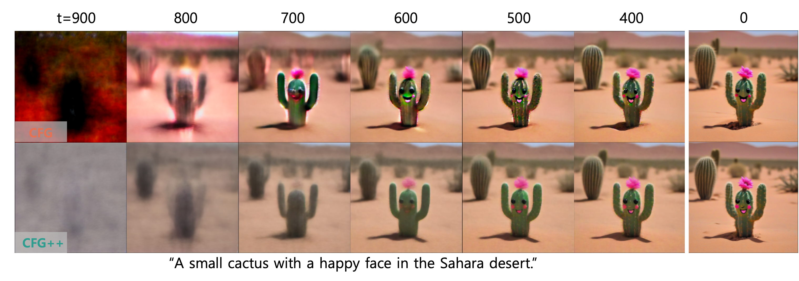

TLDR
T2I Generation Results
(SD v1.5, SDXL)

“kayak in the water, optical color, aerial view, rainbow”

"selfie of a woman and her lion cub on the plains"

"woman sniper, wearing soviet army uniform, in snow ground"

"fisherman sitting on a tropical beach at sunset with bending palm trees"

"A man wearing a suit is taking a self portrait with a camera"

"A painter study hard to learn how to draw …"
Abstract
Classifier-free guidance (CFG) is a fundamental tool in modern diffusion models for text-guided generation. Although effective, CFG has notable drawbacks. For instance, DDIM with CFG lacks invertibility, complicating image editing; furthermore, high guidance scales, essential for high-quality outputs, frequently result in issues like mode collapse. Contrary to the widespread belief that these are inherent limitations of diffusion models, this paper reveals that the problems actually stem from the off-manifold phenomenon associated with CFG, rather than the diffusion models themselves. More specifically, inspired by the recent advancements of diffusion model-based inverse problem solvers (DIS), we reformulate text-guidance as an inverse problem with a text-conditioned score matching loss, and develop CFG++, a novel approach that tackles the off-manifold challenges inherent in traditional CFG. CFG++ features a surprisingly simple fix to CFG, yet it offers significant improvements, including better sample quality for text-to-image generation, invertibility, smaller guidance scales, reduced mode collapse, etc. Furthermore, CFG++ enables seamless interpolation between unconditional and conditional sampling at lower guidance scales, consistently outperforming traditional CFG at all scales. Experimental results confirm that our method significantly enhances performance in text-to-image generation, DDIM inversion, editing, and solving inverse problems, suggesting a wide-ranging impact and potential applications in various fields that utilize text guidance.
Method
In CFG++, the renoising process after applying Tweedie’s formula should utilize the unconditional noise $ \hat\epsilon_\varnothing $ instead of $ \hat\epsilon^w_c $. This surprisingly simple fix to the original CFG algorithm leads to smoother trajectory of generation. This improvement is also demonstrated in the following visualization of the discrete evolution of the posterior mean.

BibTeX
BibTex Code Here